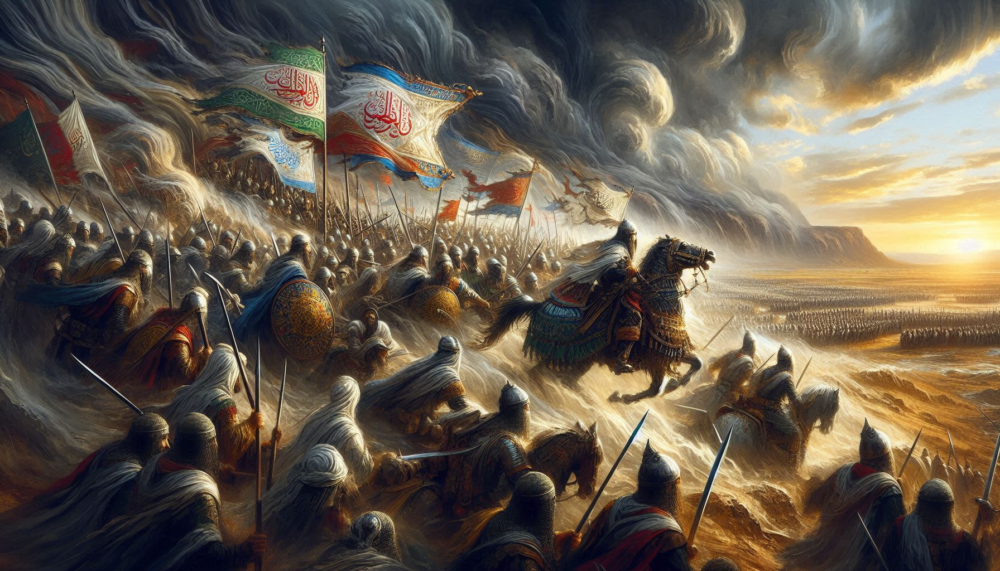
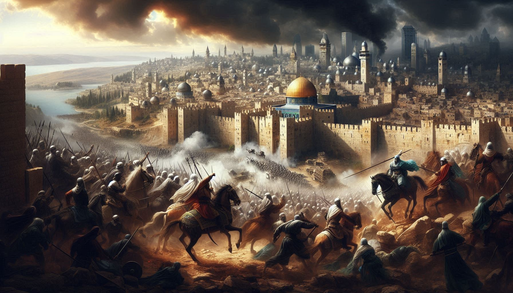
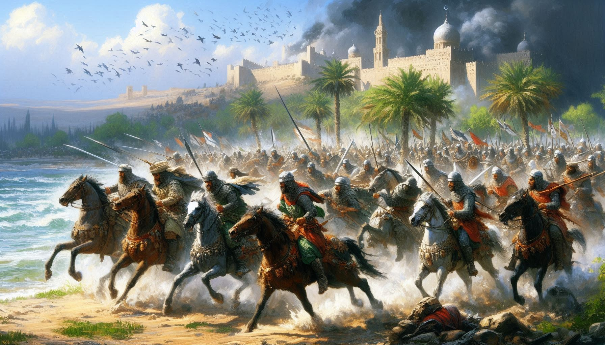
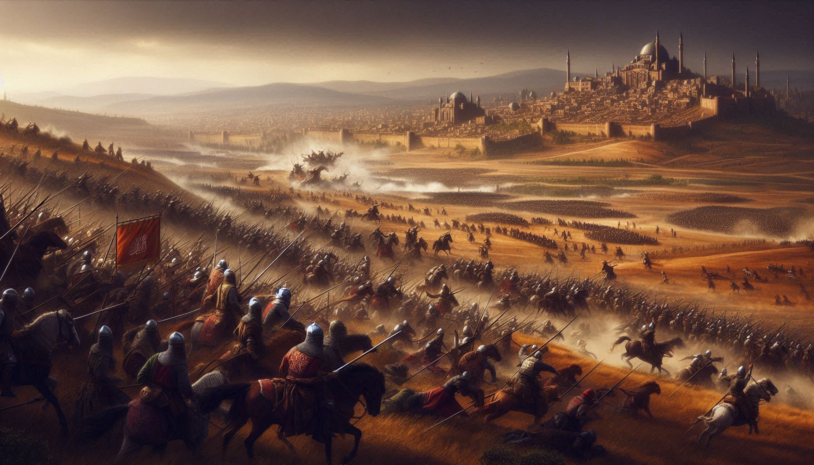
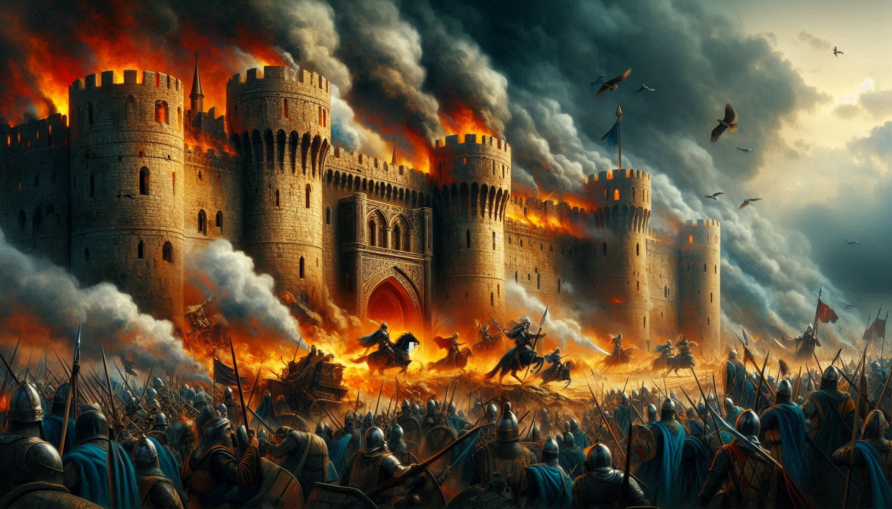
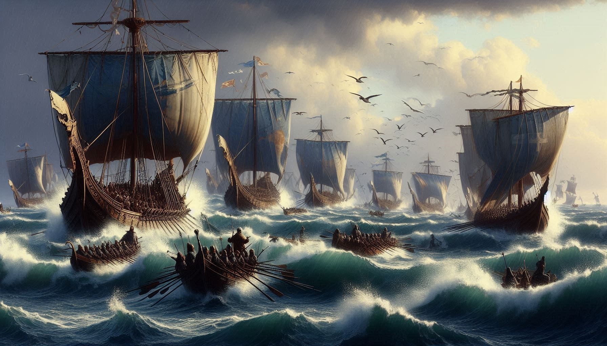

The Battle of Hattin, fought on July 4, 1187, was a pivotal clash
between Saladin's forces and the Crusader Kingdom of Jerusalem.
Saladin's army decisively defeated the Crusaders, leading to the
capture of King Guy of Lusignan and the loss of most of the Crusader’s
territories in the Holy Land. The victory paved the way for Saladin to
recapture Jerusalem later that year. The battle marked a significant
turning point in the Crusades, demonstrating Saladin's military
prowess and strategic acumen.

The Siege of Jerusalem in 1187 was a pivotal battle during the
Crusades, led by Saladin. After his decisive victory at the Battle of
Hattin, Saladin besieged the city, which was defended by Balian of
Ibelin. Following intense fighting and negotiations, Jerusalem
capitulated on October 2, 1187, resulting in the city's return to
Muslim control and prompting the launch of the Third Crusade.
Saladin's victory was a significant moment in the history of the
Crusades.

The Battle of Cresson took place on May 1, 1187, near Nazareth. It
involved a small Crusader force led by Gerard de Ridefort, Grand
Master of the Knights Templar, clashing with a larger Muslim force
under Saladin's commander, Farrukh Shah. The Crusaders were decisively
defeated, suffering heavy losses. This battle was a prelude to the
larger conflict at the Battle of Hattin later that year.

The Battle of Hama in 1178 was a conflict between the forces of the
Crusader Principality of Antioch and the Ayyubid Sultanate led by
Saladin. The Crusaders, commanded by Baldwin IV of Jerusalem, aimed to
curb Saladin's growing power in the region. Despite initial success,
the Crusaders were ultimately defeated by Saladin's well-coordinated
forces. This victory reinforced Saladin's dominance in Syria and set
the stage for his subsequent campaigns against the Crusaders.

The Siege of Jacob's Ford in 1179 was a significant conflict between
the Crusader Kingdom of Jerusalem and the forces of Saladin. The
fortress, known as Chastellet, was strategically important, and its
construction threatened Muslim territories. Saladin besieged the
fortress, and despite a determined defense, his forces overwhelmed the
garrison, capturing and destroying the stronghold. The fall of Jacob's
Ford was a strategic victory for Saladin, weakening the Crusader's
frontier defenses.

The Attack on Acre in 1179 was a significant clash between the
Crusader Kingdom of Jerusalem and Saladin's forces. Saladin launched a
surprise raid on the city, successfully breaching its defenses and
causing substantial damage. This bold and effective assault
demonstrated Saladin's military prowess and increasing dominance in
the region. The raid highlighted Saladin's ability to challenge
Crusader control and set the stage for future victories.